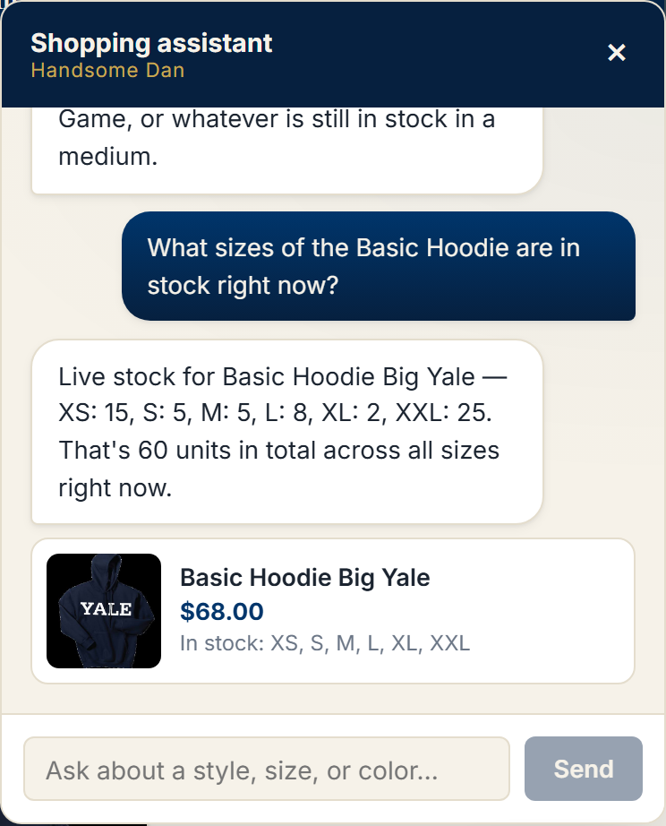
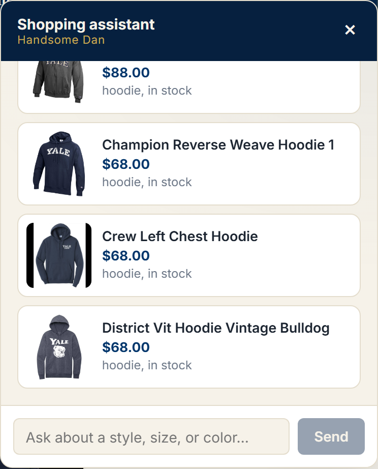
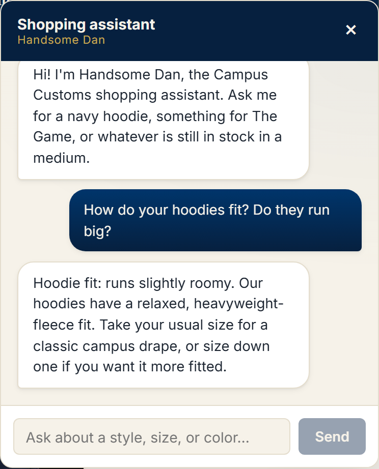

Real-time database inventory lookup in chat
Pass
Asked which sizes are in stock, the assistant calls the check_inventory tool
and reports the exact per-size counts straight from campus_customs.db (XS: 15,
S: 5, M: 5, L: 8, XL: 2, XXL: 25). This proves the chatbot answers availability questions
from the live database rather than from guesses or stale text.
Dynamic product cards rendered from chat search
Pass
A plain-language request ("what hoodies do you have?") triggers a catalogue search and the matching products come back as cards with their real image, name, and price. This proves the chat turns a natural-language query into shoppable, clickable results that link to the same product detail pages as the storefront.
Usability improvement in action — size guidance
Pass
Asked how the hoodies fit, the assistant uses the size-recommendation feature to explain that the heavyweight fleece runs slightly roomy and advises sizing down for a fitted look. This proves the usability enhancements help shoppers decide with confidence, reducing the hesitation and wrong-size returns that stall an online apparel purchase.